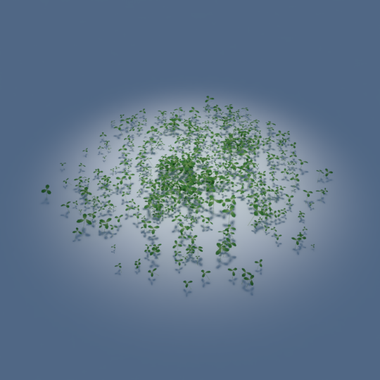

This clover model can be used to create portions of smaller dense groundcover among taller vegetation. It can come in all sorts of shapes and colours, so this is merely a low-polygon interpretation (lacking a lot of detail), and only provides one possible material which may be within the ballpark of clover species.
This model is provided as a circular patch, which is relatively sparse. It is assumed that this patch will be instanced many times with different translated locations, rotations, and scales in order to build up the illusion of a field of vegetation.
Materials
The colours have been calibrated with Macbethcal to a patch of clover in Australia, but the specularity and roughness values are guessed. Therefore the green of the grass should be within the ballpark of believable colours, but it should not be treated as a proper representation of a specific species.
Usage
This Radiance model follows the Radiance Filesystem Hierarchy
Standard. As
such, please run make lib to build the Radiance mesh file. Once done, you can
use this in your scene by:
!xform lib/clover/obj/model.rad
In order to preserve memory in the occasion of including many instances of this
model, an .oct octree is also provided, and so you can instance it in your
scene as follows:
void instance model
1 lib/clover/obj/model.oct
0
0
Authors
This model was originally created by Marco Pavanello and Joseph Dowling in their free Blender grass pack licensed under GPL.
This model was modified by Dion Moult in order to create circular patches, follow the RFHS requirements such as naming and model scale, and add Radiance material definitions.
The original content does not specify which version of GPL it was licensed for, and this creates some confusion, especially as GPLv3 is much more specific about compatibility. Therefore this model is licensed under the Creative Commons Attribution 4.0 license (CC-BY 4.0).